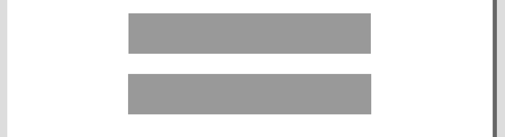

响应式设计和自适应设计的区别
响应式(Responsive)布局和自适(Adaptive)应布局，也叫响应式设计与自适应设计。他们都用于在不同屏幕尺寸的设备上显示合适的内容。当你在思考这个问题的时候，表示你已经开始死扣概念了，这个问题在网上争议较大，包括国外的CSS-Tricks上的文章也有产生争议的。阮一峰博客里面将Responsive Web Design直接翻译为自适应web设计。
概念区别对比
我们来对比下各个地方的解释，响应式web设计 responsive web design (RWD) ，自适应web设计 adaptive web design (AWD)
CSS-Tricks
- 响应式强调的是浏浏览器窗口缩放时，页面元素布局、大小实时变化，整个变动的过程是平滑的
- 自适应强调的是窗口缩放到某几个特定的宽度时，页面元素布局、大小发生变化。整个变动的过程不是平滑的

在这篇文章的评论区
- (responsive) uses relative units (e.g. percentages) to fluidly respond its layout to any browser/device conditions. 使用相对的单位(比如百分比)在任何浏览器或设备上，流畅的响应布局
- (adaptive) uses fixed units (e.g. pixels) to adapt to a specific condition. 使用固定单位（例如像素）来适应特定条件。
参考：
- The Difference Between Responsive and Adaptive Design - CSS-Tricks
- 9 GIFs That Explain Responsive Design Brilliantly
MDN
Responsive design works on the principle of flexibility - a single fluid website that can look good on any device. Responsive websites use media queries, flexible grids, and responsive images to create a user experience that flexes and changes based on a multitude of factors.（响应式设计以灵活性为原则-一个流畅的网站，可以在任何设备上看起来不错。 响应式网站使用媒体查询，灵活的网格和响应式图像来创建基于多种因素而变化和变化的用户体验。）
Adaptive design is more like the modern definition of progressive enhancement. Instead of one flexible design, adaptive design detects the device and other features, and then provides the appropriate feature and layout based on a predefined set of viewport sizes and other characteristics.（自适应设计更像是渐进增强的现代定义。 自适应设计代替一种灵活的设计，而是检测设备和其他功能，然后根据一组预定义的视口大小和其他特征提供适当的功能和布局。）
参考: Responsive design versus adaptive design - MDN
阮一峰博客
直接将响应式翻译为自适应，概念一致。强调responsive web design概念提出者Ethan Marcotte对其定义：Fluid grids（流动布局，使用float）, flexible images(弹性自适应显示图片), and media queries(使用媒体查询) are the three technical ingredients for responsive web design
参考: 自适应网页设计（Responsive Web Design）- 阮一峰
前端开发者博客
响应式布局等于流动网格布局，自适应布局等于使用固定分割点来进行布局
uxpin studio
Put simply, responsive is fluid and adapts to the size of the screen no matter what the target device. Responsive uses CSS media queries to change styles based on the target device such as display type, width, height, etc., and only one of these is necessary for the site to adapt to different screens.（简而言之，响应是灵活的，并且无论目标设备是什么，都可以适应屏幕的大小。 响应式使用CSS媒体查询来根据目标设备更改样式，例如显示类型，宽度，高度等，并且站点只需要其中之一就可以适应不同的屏幕。）
Adaptive design, on the other hand, uses static layouts based on breakpoints which don’t respond once they’re initially loaded. Adaptive works to detect the screen size and load the appropriate layout for it – generally you would design an adaptive site for six common screen widths: （自适应设计使用基于断点的静态布局，这些断点在最初加载时不会响应。 自适应可检测屏幕尺寸并为其加载适当的布局-通常，您会针对六个常见的屏幕宽度设计一个自适应站点：）320 480 760 960 1200 1600. On the surface, it appears that adaptive requires more work as you have to design layouts for a minimum of six widths. However, responsive can be more complex as improper use of media queries (or indeed not using them at all) can make for display and performance issues.（从表面上看，自适应设计似乎需要更多的工作，因为您必须设计至少六个宽度的布局。 但是，由于媒体查询使用不当（或者根本根本不使用它们）会导致显示和性能问题，因此响应式响应可能会更加复杂。）
参考：Responsive Design vs. Adaptive Design: What’s the Best Choice for Designers? (响应式与自适应设计：最佳选择是什么？)
博客园
响应式几乎已经成为优秀页面布局的标准。
1、布局特点：每个屏幕分辨率下面会有一个布局样式，即元素位置和大小都会变。
2、设计方法：媒体查询+流式布局。通常使用 @media 媒体查询 和网格系统 (Grid System) 配合相对布局单位进行布局，实际上就是综合响应式、流动等上述技术通过 CSS 给单一网页不同设备返回不同样式的技术统称。
优点：适应pc和移动端，如果足够耐心，效果完美
缺点：（1）媒体查询是有限的，也就是可以枚举出来的，只能适应主流的宽高。（2）要匹配足够多的屏幕大小，工作量不小，设计也需要多个版本。
自适应布局（Adaptive Layout） 自适应布局的特点是分别为不同的屏幕分辨率定义布局，即创建多个静态布局，每个静态布局对应一个屏幕分辨率范围。改变屏幕分辨率可以切换不同的静态局部（页面元素位置发生改变），但在每个静态布局中，页面元素不随窗口大小的调整发生变化。可以把自适应布局看作是静态布局的一个系列。 1、布局特点：屏幕分辨率变化时，页面里面元素的位置会变化而大小不会变化。 2、设计方法：使用 @media 媒体查询给不同尺寸和介质的设备切换不同的样式。在优秀的响应范围设计下可以给适配范围内的设备最好的体验，在同一个设备下实际还是固定的布局。
参考：静态布局、自适应布局、流式布局、响应式布局、弹性布局等的概念和区别 - P妞酱儿 - 博客园
实际使用场景
一般在实际开发中，会根据产品具体的场景来使用不同的技术实现
- 仅用在手机端: 使用rem+js
- 用在pc端+手机+pad：使用 media媒体查询在不同的特定宽度区间使用不同的样式布局
- 用在手机端和pad端：对于pad可能会显示更丰富的功能的场景会 rem+js+media媒体查询一起使用
这些都不是绝对的，一些展示性较强的pc官网，可能也会用到rem+js，总之，概念都是虚的，技术只是工具，大可不必过多的的纠结什么是响应式和什么是自适应，我们只需要根据产品的功能需要，找出合适的技术方案即可。